Petler
Nedir
Pet parçaları toplayarak petleri aç ve evrimleştir. Eşlikçi pet kendi mesleğini hızlandırır; petler savaşmaz.
Nasıl gidilir
- ENVANTER.
- PET (karakterinin sağ üstü).
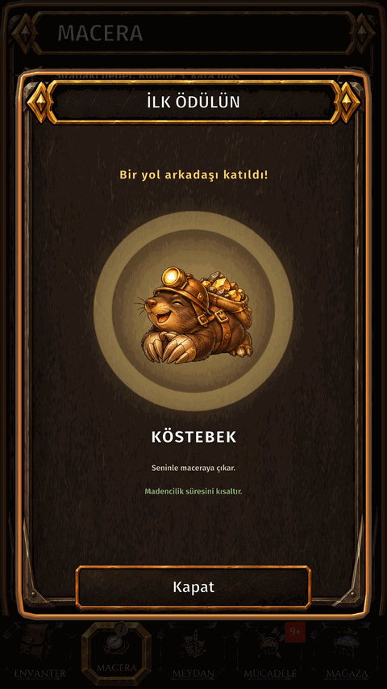
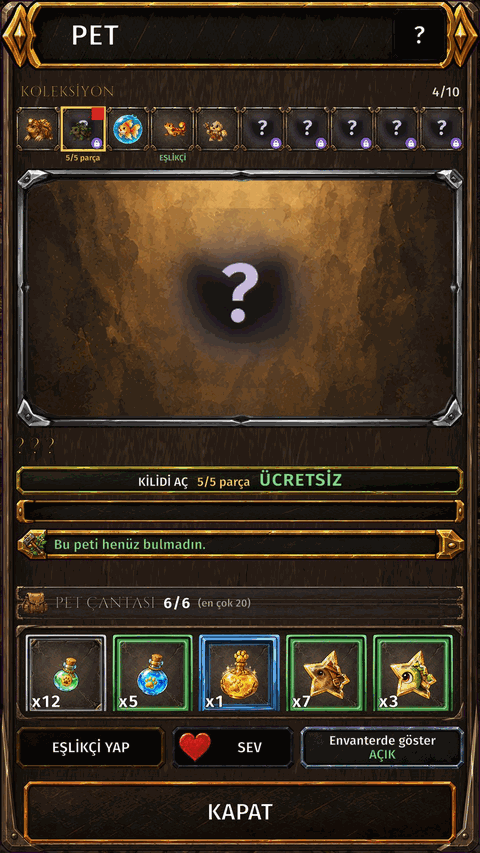
Petler
| Pet | Yardım ettiği meslek | Parça | Parçalar nereden gelir |
|---|---|---|---|
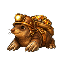 Köstebek | Madencilik |  Köstebek Parçası Köstebek Parçası | Nereden gelir: Pet Kutusu |
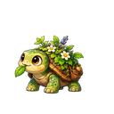 Bitki Kaplumbağası | Bitki bilgisi |  Bitki Kaplumbağası Parçası Bitki Kaplumbağası Parçası | Nereden gelir: Pet Kutusu |
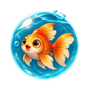 Balık | Balıkçılık |  Balık Parçası Balık Parçası | Nereden gelir: Pet Kutusu |
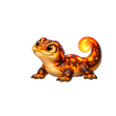 Semender | Dökümcülük |  Semender Parçası Semender Parçası | Nereden gelir: Pet Kutusu |
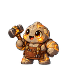 Golem | Demircilik |  Golem Parçası Golem Parçası | Nereden gelir: Pet Kutusu |
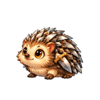 Kirpi | Silahçılık |  Kirpi Parçası Kirpi Parçası | Nereden gelir: Pet Kutusu |
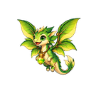 Peri Ejder | Simya |  Peri Ejder Parçası Peri Ejder Parçası | Nereden gelir: Pet Kutusu |
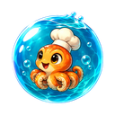 Ahtapot | Aşçılık |  Ahtapot Parçası Ahtapot Parçası | Nereden gelir: Pet Kutusu |
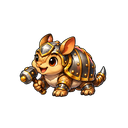 Armadillo | Zırhçılık |  Armadillo Parçası Armadillo Parçası | Nereden gelir: Pet Kutusu |
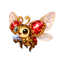 Mücevher Böceği | Kuyumculuk |  Mücevher Böceği Parçası Mücevher Böceği Parçası | Nereden gelir: Pet Kutusu |
Rehber
- Her pet bir mesleğe aittir. Sahip olduğun her pet kendi mesleğindeki işi hızlandırır — kuşanman gerekmez.
- Petin seviyesi yükseldikçe bonus büyür. Panel şimdiki ve sonraki seviyedeki bonusu gösterir.
- Petler dövüşü etkilemez.
- Petin mesleğinde toplama ya da üretim yaptıkça pet EXP kazanır.
- Pet EXP iksirleri hemen EXP verir: pet çantasındaki iksire dokun ve seçili pete kullan.
- Bir peti eşlikçin olarak seçebilirsin. Yalnızca görünüş içindir: sahip olduğun her pet bonusunu zaten verir.
- Petler, pet parçaları ve Pet Kutuları sana bağlıdır, takas edilemez.
- Parçalar peti evrimleştirir de. Her evrim bir yıldız ekler ve petin seviye tavanını yükseltir.
- EXP çubuğunda Evrim gerekli yazıyorsa pet evrimleşmeden seviye atlayamaz.